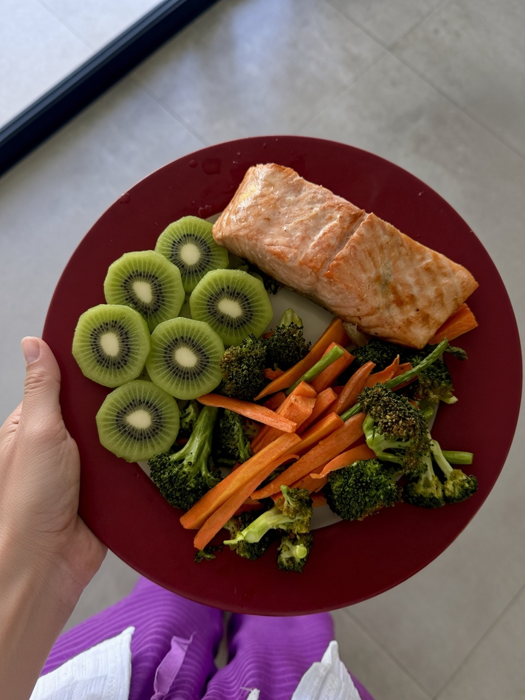

Содержит фермент (актинидин), который помогает расщеплять белок и улучшает моторику кишечника. Проходимость комка пищи в кишечнике становится выше, облегчая тяжесть в желудке после еды, ускоряя перистальтику и пищеварение в целом.
в день (около 150 г).
При рационе с высоким содержанием тяжёлого белка (мясо, птица) или при большой массе тела можно съедать до 2–3 штук в день, принимая их вместе с белком.